Transformando Vidas
con Fe, Amor y Acción
Centro de tratamiento integral de adicciones. Programas residenciales de restauración personal con enfoque humano, clínico, espiritual y natural.
Descubre más
Centro de tratamiento integral de adicciones. Programas residenciales de restauración personal con enfoque humano, clínico, espiritual y natural.
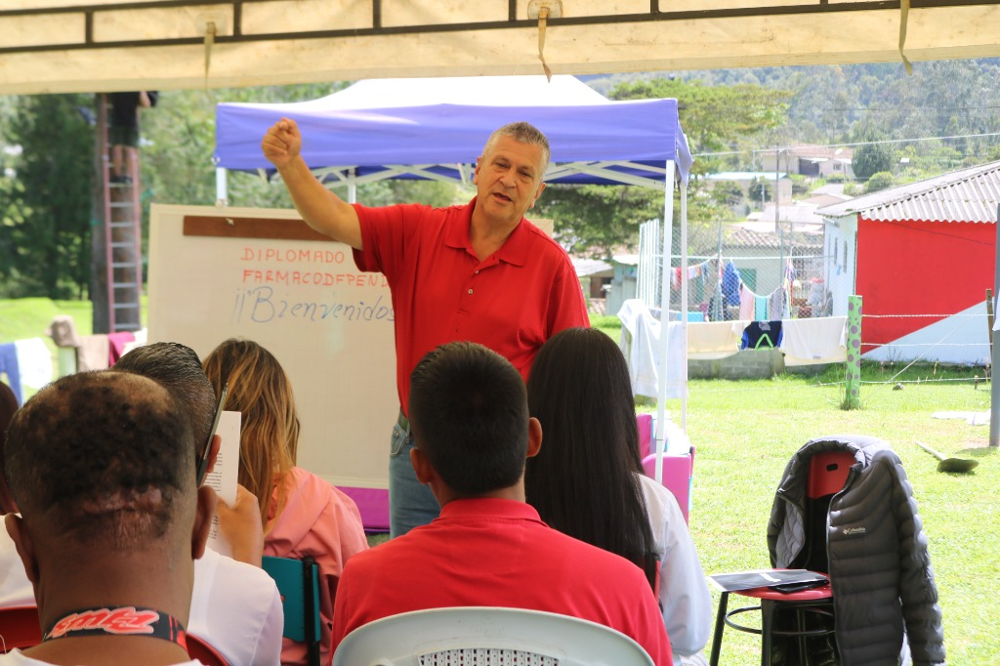
Nacimos con el propósito de acompañar a personas y familias en procesos de restauración integral frente a las adicciones. A través de la fe, la ciencia y el respaldo comunitario, creemos en el poder transformador del amor de Dios en cada vida.
Ofrecemos programas residenciales de tratamiento de adicciones con un enfoque terapéutico humano, clínico, espiritual y natural. No tratamos sólo la abstinencia — tratamos la raíz.
Restaurar y transformar vidas a través de programas integrales de tratamiento, acompañamiento profesional y el amor de Dios.
Ser un referente de esperanza y transformación social, impactando a comunidades enteras con fe, ciencia y acción.
Dos programas residenciales diseñados para romper el ciclo de la adicción desde la raíz.
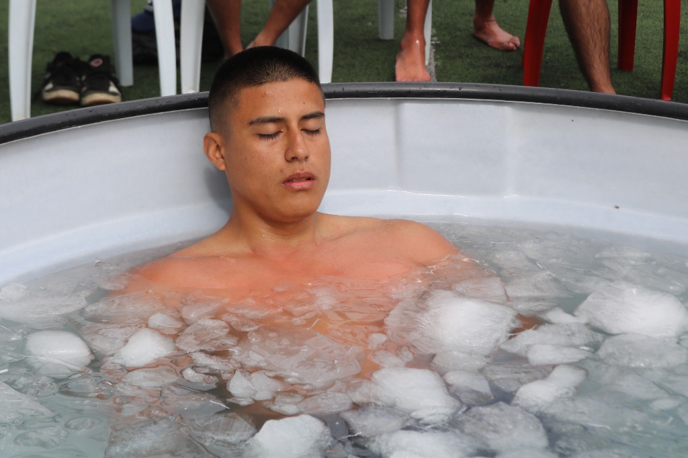
Proceso residencial intensivo diseñado para interrumpir el ciclo de la adicción, reprogramar patrones mentales y emocionales, y establecer una base sólida de recuperación.
Programa residencial de alta contención y transformación profunda. No solo buscamos la abstinencia, sino la rehabilitación completa del ser humano: mente, emociones, conducta, espiritualidad y proyecto de vida.
Proceso residencial intensivo de transformación personal con enfoque terapéutico humano, clínico, espiritual y natural.
Diseñado para personas que desean:
Durante 21 días, el participante recibe acompañamiento constante que aborda la adicción desde la raíz — desde la conciencia, la responsabilidad personal y la sanación integral.
Suplementos terapéuticos como apoyo al proceso de recuperación:
Entorno tranquilo, seguro y propicio para la introspección y el cambio.
💬 Solicitar Información por WhatsAppPrograma residencial de alta contención y transformación profunda. Rehabilitación completa del ser humano.
Personas con:
Este programa no solo busca la abstinencia, sino la rehabilitación completa: mente, emociones, conducta, espiritualidad y proyecto de vida. Acompañamiento permanente 24/7.
Entorno seguro, estructurado y con atención permanente para una transformación profunda y duradera.
💬 Solicitar Información por WhatsAppUn espacio exclusivo de restauración y transformación para mujeres.
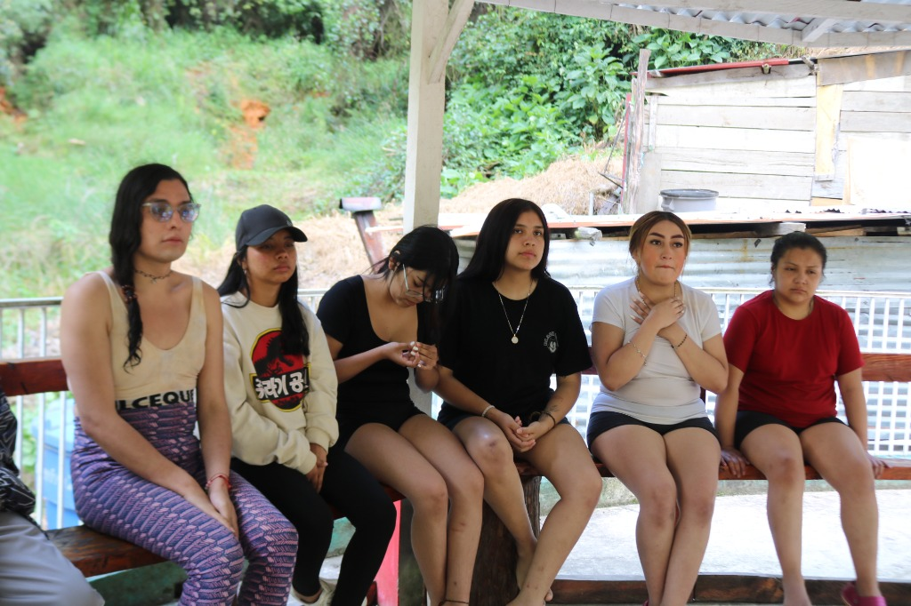
Entendemos que el proceso de recuperación de una mujer tiene particularidades únicas. Por eso, hemos creado una sede exclusivamente femenina donde cada participante reciba atención especializada en un ambiente de confianza, respeto y sororidad.
Todos nuestros programas de tratamiento están disponibles en esta sede, adaptados con enfoque de género:
Espacio exclusivo para mujeres, libre de factores externos, con acompañamiento permanente.
Atención especializada que comprende las necesidades específicas del proceso femenino.
Comunidad terapéutica donde las mujeres se apoyan mutuamente en su proceso de recuperación.
Profesionales capacitados en atención psicológica con perspectiva de género.
Manualidades, arte-terapia y actividades ocupacionales pensadas para el bienestar.
Restauración de vínculos familiares con acompañamiento profesional especializado.
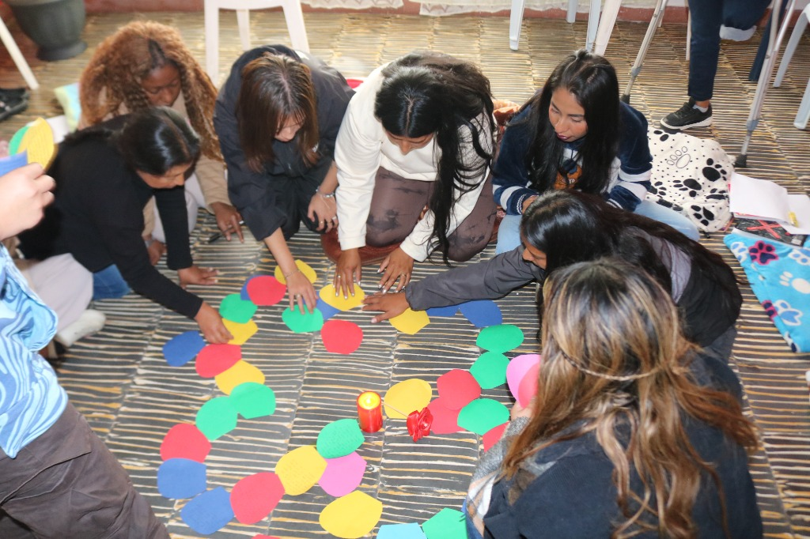
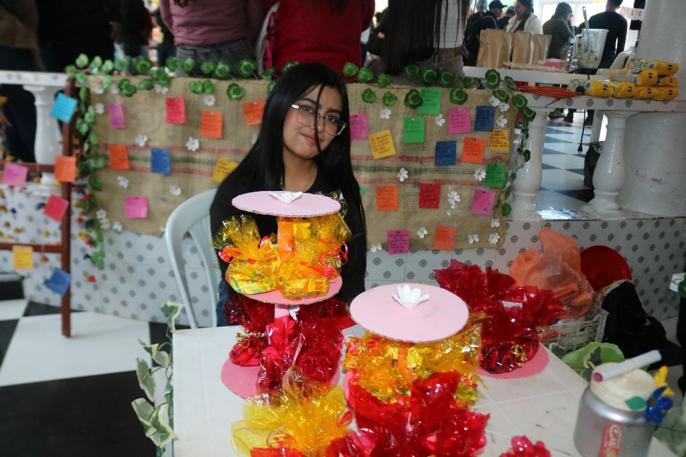
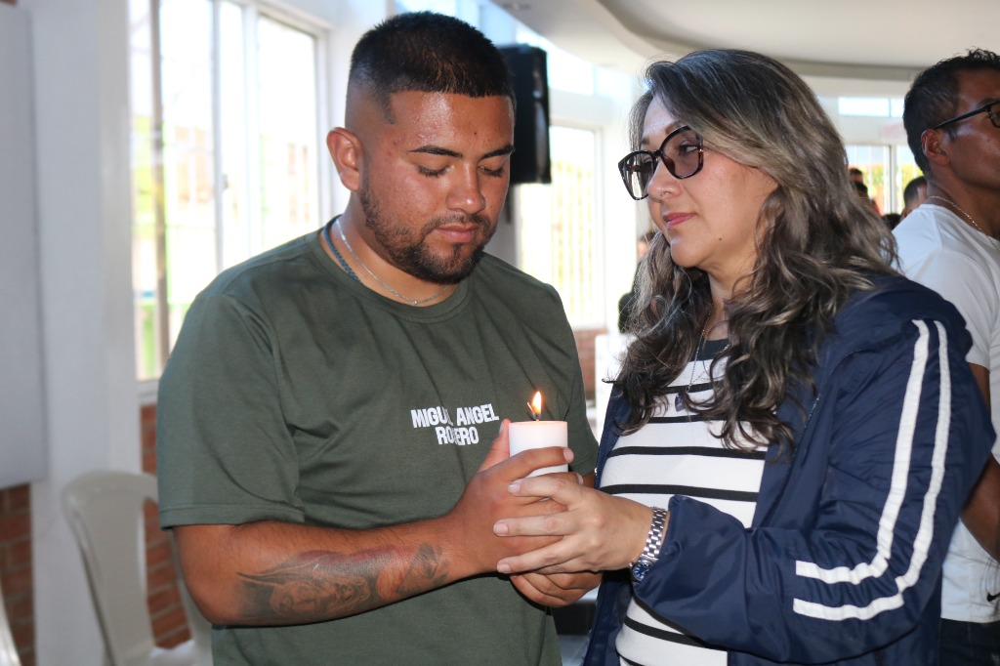
Contáctanos para recibir información sobre nuestros programas en la Sede Femenina. La recuperación es posible.
Cada número representa una historia de esperanza, restauración y nuevas oportunidades.
La Fundación Vida Con Dios me dio una segunda oportunidad. Encontré una familia, un propósito y la fuerza para seguir adelante. Hoy soy una persona nueva, llena de esperanza.
Imágenes que capturan la esencia de nuestro trabajo y la alegría de transformar vidas juntos.
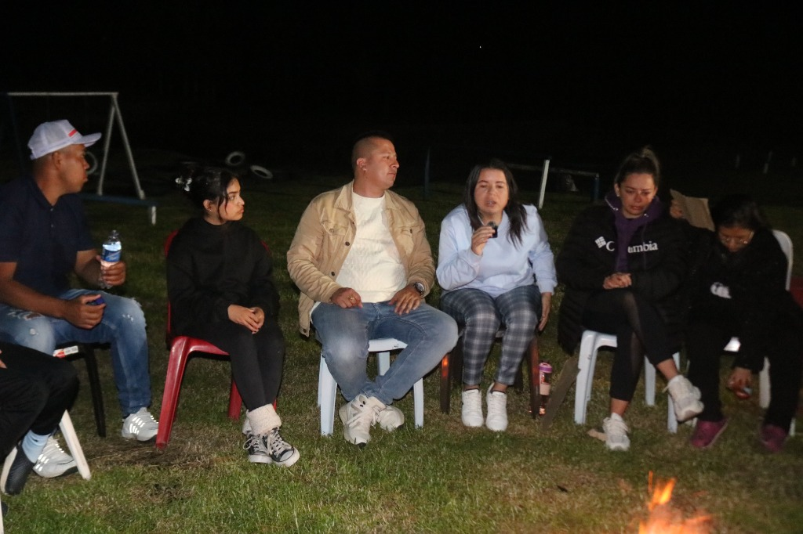
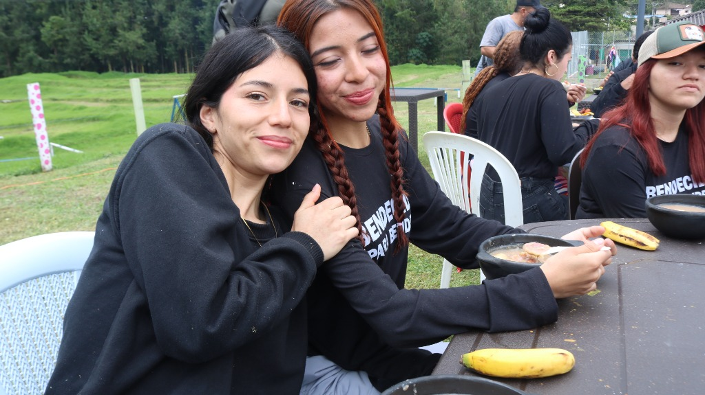
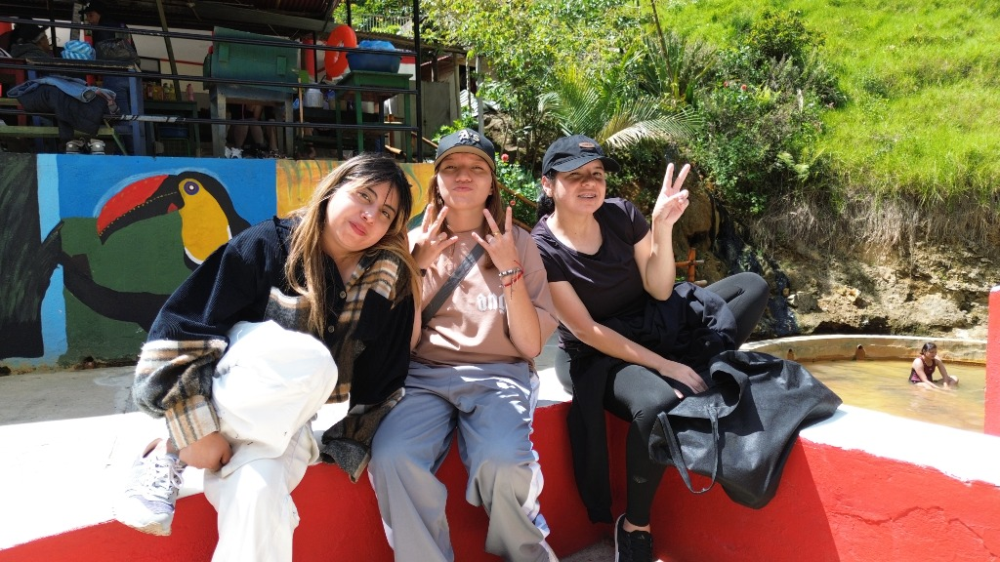
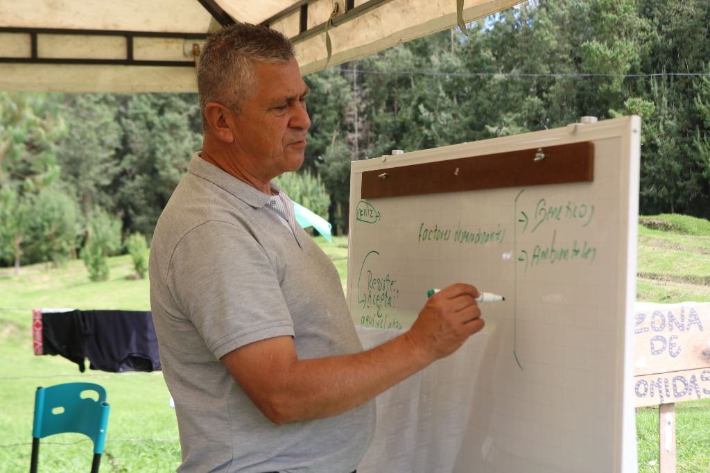
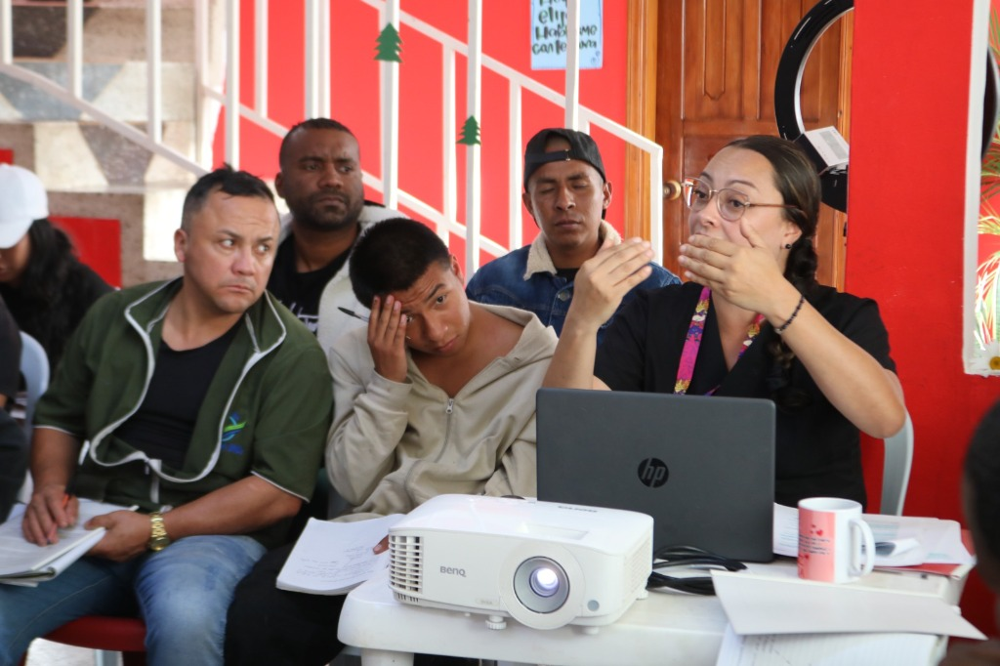
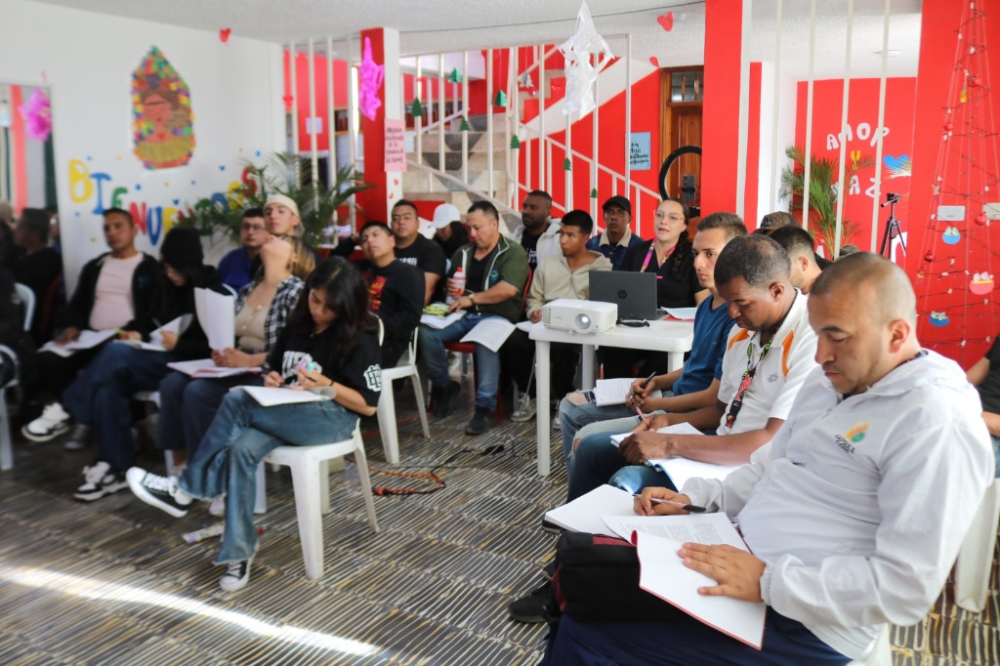
Tu apoyo hace posible que más vidas sean transformadas.
Dona tu tiempo y talento. Acompáñanos en los encuentros, talleres y actividades.
Quiero ser voluntarioCon tu aporte financias programas de formación, alimentación y acompañamiento.
Alimentos, ropa, útiles y más. Todo será entregado directamente a quienes lo necesitan.
Quiero donarEstamos ubicados en un entorno tranquilo y natural, ideal para el proceso de restauración.
Corregimiento de La Estancia, La Cruz, Nariño, Colombia